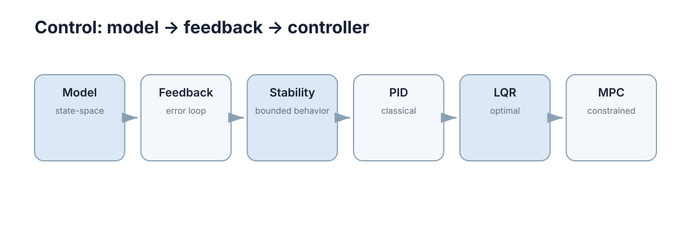

Dynamic Models & State Space
前置：如果 \(s\)、\(j\omega\)、传递函数、极点或相位裕度还陌生，请先读 Signals, Complex Numbers, Laplace Transform & Frequency Response。本章把它们当作已定义概念。 这一章讲的是你开车时脑子里一直在做、但从没写成公式的那件事。读完你应该能自己推出三件事：为什么”油门开多少就跑多快”这种查表模型一定会翻车、为什么状态方程里那几个矩阵决定了后面所有控制器能做什么、以及为什么采样周期 \(\Delta t\) 不是”随便选的数”，而是模型的一部分。
一、先看一个你已经做过无数遍的动作
你在高速上跟车。前车距你 20 m，你要决定脚上使多大劲——加速、松油、还是点刹车。
如果别人问你”你现在靠什么做判断”，你大概会说”车距 20 m”。但这不够。同样的 20 m，你的动作可以完全相反：
- 前车在加速、你也在加速追——你会松一点油；
- 前车刚亮刹车灯、你们俩正在快速接近——你得立刻重刹。
所以光知道”差多少”不足以决定”做什么”。你脑子里实际装着至少三个数：你多快、他多快、你们差多远。
再看一步：你踩下刹车的那一瞬间，车速并不会立刻变成 0，它只是开始下降。也就是说，输入改变的不是状态本身，而是状态的变化率。
最后：你的仪表盘只显示一个车速，但你的判断用到了三个数。能被看见的东西，和决定未来的东西，不是一回事。
这三条直觉就是本章的全部内容。下面先把它们命名成数学对象，再一个个推出来：
| 直觉 | 名字 | 符号 |
|---|---|---|
| 决定未来的那一组数（车速、前车速度、车距） | 状态 | \(x\) |
| 你能施加的作用（油门、刹车） | 输入 | \(u\) |
| 你能量到的那些数（车速表） | 输出 | \(y\) |
| “输入改变的是变化率” | 状态方程 | \(\dot x = f(x,u)\) |

二、静态模型为什么一定会坏
最省事的建模方式是查表：上次测过，油门 50% 给 10 N 推力，那就把这张表存下来。这叫静态模型——输出只由当前输入决定，写成 \(y=f(u)\)。
推到具体场景里，它会怎么坏：
- 你挂了 5 kg 载荷，同样的 50% 油门只剩 8 N；
- 电池从 12.6 V 掉到 10.5 V，同一个”50%“其实不再是同一个 50%；
- 电机绕组从 25 ℃ 升到 80 ℃，磁钢弱了，推力再掉一截。
这三条还能靠重新标定补救。真正补不了的是第四条：同样 50% 油门，静止起步和已经在 10 m/s 巡航，接下来一秒发生的事完全不同。 静态模型里根本没有”现在多快”这一栏，所以它表达不了这件事——这不是精度不够，是结构不对。
那什么时候能用静态近似？看系统的时间常数 \(\tau\)（time constant）：输入跳变后，系统走到新稳态 63% 所需的时间。若控制周期 \(\Delta t \ll \tau\)（经验上 \(\Delta t<0.1\tau\)），一步之内系统来不及变化多少，静态近似够用；若 \(\Delta t\) 和 \(\tau\) 同量级，静态近似就会系统性低估响应速度，用它设计的控制器必然过冲。
一个数字：某电机 \(\tau=50\) ms。
| 控制周期 | \(\Delta t/\tau\) | 结论 |
|---|---|---|
| 1 ms（1 kHz） | 0.02 | 静态近似可用，误差约 2% |
| 10 ms（100 Hz） | 0.2 | 勉强，需要保留一阶动态 |
| 50 ms（20 Hz） | 1.0 | 不可用，一步内速度已变一大截 |
结论：记忆必须被显式写进模型。这就是”状态”。
三、状态：把”记忆”写成一组数字
先给定义，再解释它为什么长这样。
状态（state）：一组变量。给定它，再加上从今往后的所有输入，就能唯一确定未来。
检验一个候选状态合不合格，标准只有一条：同一组数配同样的输入，会不会出现两种不同的未来？ 会，就说明缺变量。
举个能算的：两辆小车都在 \(p=0\)，发动机都给 \(1\ \text{m/s}^2\) 的加速度。第一辆初速 \(v=0\)，1 s 后 \(p=0.5\)；第二辆初速 \(v=5\)，1 s 后 \(p=5.5\)。同样的”位置 0”、同样的输入，两个不同的未来——位置单独一个数不是状态，速度也得算进来。写成向量：
\[ x=\begin{bmatrix}p\\v\end{bmatrix}. \]
补上两行关系，这组数就能自己往前走：
\[ \dot p = v,\qquad \dot v = u . \]
这里 \(\dot p\) 读作”\(p\) 随时间的变化率”，就是速度；\(\dot v\) 是加速度，等于你给的输入。（“把所有高阶导数都摊成状态”这件事，第五节会一般化。）
顺带回答一个后面要反复用的问题：状态必须能测到吗？ 不必。车速表坏了，你仍可用轮速、加速度积分、GPS 差分去估计速度。状态是”模型内部必须记住的东西”，不是”传感器必须直接给出的东西”——这条区别就是第十一节可观性的伏笔。
四、状态方程：把三个问题写成一行
第一节的三个问题，现在可以一一对号：
| 问题 | 数学对象 |
|---|---|
| 现在处于什么状态？ | \(x\) |
| 输入怎样改变它？ | \(f(\cdot)\) |
| 下一时刻会发生什么？ | 对 \(\dot x=f(x,u)\) 积分 |
最一般的形式是非线性的：
\[ \dot x=f(x,u),\qquad y=h(x,u), \]
其中 \(x\in\mathbb{R}^n\) 是 \(n\) 维状态，\(u\in\mathbb{R}^m\) 是 \(m\) 维输入，\(y\in\mathbb{R}^p\) 是我们关心或能够测到的那 \(p\) 个数。
如果系统在工作点附近近似线性，就写成线性的：
\[ \dot x=Ax+Bu,\qquad y=Cx+Du . \]
四个矩阵各有分工，第一次见就当场拆开：
| 矩阵 | 维度 | 它决定什么 |
|---|---|---|
| \(A\) | \(n\times n\) | 系统自身的演化方式（自由响应的快慢与稳定性） |
| \(B\) | \(n\times m\) | 输入从哪些方向进入状态 |
| \(C\) | \(p\times n\) | 哪些状态组合能被看见 |
| \(D\) | \(p\times m\) | 输入直接穿透到输出的通道（多数机械系统 \(D=0\)） |
为什么 \(A\)、\(B\) 比任何控制器都更基础？ 不用宣告，代一遍就清楚。假设你设计了状态反馈
\[ u=-Kx , \]
代进状态方程：
\[ \dot x=Ax+B(-Kx)=(A-BK)x . \]
闭环稳不稳、有多快，全看 \((A-BK)\) 的特征值，而它的原材料只有 \(A\)、\(B\) 和你的 \(K\)。换句话说：换控制器只是换了 \(K\)，换 \(A\)、\(B\) 才是换了一个系统。 \(A\)、\(B\) 错了，\(K\) 怎么调都是在优化一个不存在的对象。
五、把二阶方程降成一阶向量
你早就会写二阶方程了。质量—弹簧—阻尼系统：
\[ m\ddot p+c\dot p+kp=u , \]
左边每一项都认识：\(m\ddot p\) 是惯性力、\(c\dot p\) 是阻尼、\(kp\) 是弹簧力，右边是外力。这是牛顿第二定律直接给的式子。
问题是计算机不会解二阶方程。一切数值方法都是”用这一刻的值推出下一刻的值”这种一步一步的推进，每一步只能把当前值喂给右边。所以必须先把它压成一阶。
令 \(x_1=p\)、\(x_2=\dot p\)（正是上一节那组”位置 + 速度”），于是
\[ \begin{aligned} \dot x_1 &= x_2,\\ \dot x_2 &= -\frac{k}{m}x_1-\frac{c}{m}x_2+\frac{1}{m}u . \end{aligned} \]
第二行就是把 \(m\ddot p=u-c\dot p-kp\) 两边除以 \(m\)。写成矩阵：
\[ \dot x= \begin{bmatrix} 0&1\\ -k/m&-c/m \end{bmatrix}x+ \begin{bmatrix} 0\\1/m \end{bmatrix}u . \]
这一步的价值在于它的一般性：\(n\) 阶常微分方程就配 \(n\) 个状态，取输出及其前 \(n-1\) 阶导数当状态，任何高阶方程都能压成同一个形状 \(\dot x=Ax+Bu\)。后面要用的所有工具（极点、可控性、LQR）只认这个形状，不关心你原来是几阶。
六、\(A\) 的特征值：系统的物理属性
把上一节那套 \(A\) 代进去，先算特征值（eigenvalue），即满足 \(\det(A-\lambda I)=0\) 的 \(\lambda\)：
\[ \lambda_{1,2}=\frac{-c\pm\sqrt{c^{2}-4mk}}{2m}. \]
根号里那个 \(c^2-4mk\) 的正负决定一切，它就是二次方程的判别式：
| 判据 | 条件 | 系统行为 |
|---|---|---|
| 过阻尼 | \(c^{2} > 4mk\) | 两个负实根，无超调、响应慢 |
| 临界阻尼 | \(c^{2} = 4mk\) | 重负实根，最快且无超调 |
| 欠阻尼 | \(c^{2} < 4mk\) | 共轭复根，有振荡与超调 |
| 无阻尼 | \(c = 0\) | 纯虚根，等幅振荡、永不衰减 |
代数字：\(m=1\)、\(k=100\)、\(c=2\)，得到
\[ \omega_n=\sqrt{k/m}=10\ \text{rad/s},\qquad \zeta=\frac{c}{2\sqrt{mk}}=0.1,\qquad \lambda_{1,2}=-1\pm 9.95j . \]
阻尼比 \(\zeta=0.1\) 是什么概念？二阶系统超调量有现成公式 \(M_p\approx e^{-\pi\zeta/\sqrt{1-\zeta^2}}\)，代进去得 \(M_p\approx 72.9\%\)：让这个振子去追一个阶跃目标，它第一趟会冲过头七成以上。
换个状态变量，\(A\) 变，特征值不变
这条值得亲手推一遍，因为它回答了”\(A\) 到底是表示还是物理”。
取另一组状态 \(z=T^{-1}x\)（\(T\) 可逆，相当于换了一套坐标）：
\[ \dot z=T^{-1}\dot x=T^{-1}A\,x=T^{-1}AT\,z . \]
新矩阵 \(A'=T^{-1}AT\)，它的特征多项式是
\[ \det(A'-\lambda I)=\det\big(T^{-1}(A-\lambda I)T\big)=\det(T^{-1})\det(A-\lambda I)\det(T)=\det(A-\lambda I), \]
和原来一模一样。所以特征值是系统的物理属性，\(A\) 里那些具体数字只是你挑的坐标系的产物。 这也是为什么判断快慢和稳定性时我们只谈特征值，不谈 \(A\) 长什么样。
七、计算机每 \(\Delta t\) 才看一眼：离散化
前面所有推导都默认 \(\dot x\) 连续变化。可控制器跑在计算机上：它每隔 \(\Delta t\) 醒一次，看一眼、算一次、输出一次，两次之间输出保持不变（这叫零阶保持）。
所以真实系统的模型是离散的：
\[ x_{k+1}=A_dx_k+B_du_k, \]
下标 \(k\) 表示第 \(k\) 次采样，\(x_{k+1}\) 就是下一次采样时的状态。
怎么从连续拿到离散？最直观的是前向欧拉（forward Euler）：既然 \(\dot x\approx\frac{x_{k+1}-x_k}{\Delta t}\)，就把导数换成差商：
\[ x_{k+1}\approx x_k+\Delta t\,f(x_k,u_k), \]
对应到线性系统就是 \(A_d\approx I+A\Delta t\)、\(B_d\approx B\Delta t\)。
为什么只是”约等于”？因为真答案是指数：
\[ e^{A\Delta t}=I+A\Delta t+\frac{1}{2}A^{2}\Delta t^{2}+\dots , \]
欧拉只留下了前两项，后面整个扔了。扔掉的量级是单步 \(O(\Delta t^{2})\)、全局 \(O(\Delta t)\)——\(\Delta t\) 减半误差减半，收敛不快但足够简单。对线性系统，精确形式是
\[ A_d=e^{A\Delta t},\qquad B_d=\int_0^{\Delta t}e^{A\tau}B\,d\tau . \]
代价是需要矩阵指数，一般由工具库提供。
| 方法 | \(A_d\) | 稳定性性质 | 适用场景 |
|---|---|---|---|
| 前向欧拉 | \(I+A\Delta t\) | 可能把稳定系统算成不稳定 | 快速原型、\(\Delta t\) 很小 |
| 后向欧拉 | \((I-A\Delta t)^{-1}\) | 对稳定系统无条件稳定 | 刚性系统 |
| 梯形法 | \((I+\tfrac{A\Delta t}{2})(I-\tfrac{A\Delta t}{2})^{-1}\) | 保相位，精度 \(O(\Delta t^{2})\) | 中等精度需求 |
| 精确离散化 | \(e^{A\Delta t}\) | 与连续系统完全一致 | 有矩阵指数工具 |
稳定性判据换了说法
连续系统的稳定条件是 \(\mathrm{Re}(\lambda_i(A))<0\)（特征值都在左半平面），离散系统变成 \(|\lambda_i(A_d)|<1\)（特征值都在单位圆内）。两者通过
\[ \lambda_d=e^{\lambda_c\Delta t} \]
连接：左半平面被指数映射进单位圆，虚轴映射到单位圆上，右半平面映射到圆外。同一条边界，换了坐标系而已。
八、\(\Delta t\) 选错会怎样
现在把 \(A_d\approx I+A\Delta t\) 单独拎出来看，因为它有一个非常具体、非常危险的失效方式。
取最简单的一阶系统 \(\dot x=-ax+bu\)，前向欧拉给出
\[ x_{k+1}=(1-a\Delta t)\,x_k+b\Delta t\,u_k . \]
系统自身稳不稳，全看那个乘子 \(m=1-a\Delta t\)：
\[ |1-a\Delta t|<1\iff 0<\Delta t<\frac{2}{a}=2\tau . \]
注意右边：\(\Delta t\) 的上限是时间常数的两倍。这条线跟控制器多聪明毫无关系，是模型自己画的。
留一个 \(a=2\)（即 \(\tau=0.5\) s）的系统当钩子，看 \(\Delta t\) 一路调大时发生什么：
| \(\Delta t\) | 乘子 \(m=1-2\Delta t\) | 行为 |
|---|---|---|
| 0.1 s | \(0.8\) | 正常，收敛到稳态 |
| 0.5 s | \(0\) | 一步到位，不振荡 |
| 0.9 s | \(-0.8\) | 稳定，但在目标上下反复跳 |
| 1.0 s | \(-1\) | 等幅振荡，永不收敛 |
| 1.1 s | \(-1.2\) | 每步放大 20%，很快炸掉 |
\(\Delta t\) 不是”算得动就选多大”的工程折衷，它是特征值的一部分。 同一个系统、同一个控制器，只把采样周期从 0.9 改成 1.1，就从”能用但抖”变成”发散”。
对这种情形还有一个更狠的例子——无阻尼振荡器
\[ \dot x=\begin{bmatrix}0&1\\-1&0\end{bmatrix}x . \]
它的 \(A\) 的特征值是 \(\pm j\)，连续解幅值恒定、永不衰减。前向欧拉给出 \(A_d=I+\Delta t A\)，特征值为 \(1\pm j\Delta t\)，模长
\[ |1\pm j\Delta t|=\sqrt{1+\Delta t^{2}}>1\quad(\text{任何}\ \Delta t>0). \]
对任何正的采样周期都大于 1——也就是说前向欧拉把这个真实系统判成”无条件不稳定”，哪怕它本来能一直保持振幅。换成后向欧拉，特征值模是 \(1/\sqrt{1+\Delta t^{2}}<1\)，恒稳定。第十三节把这两条都跑给你看。
九、状态该取几个才够
“状态要能唯一预测未来”是下限，那上限呢？把与未来无关的量塞进状态，只会让估计和控制更复杂。所以还得问”够不够用”。
| 检查项 | 通过标准 | 不通过的后果 |
|---|---|---|
| 完备性 | 给定 \((x,u)\) 未来唯一 | 预测发散，同一初值出现多条轨迹 |
| 可测/可估 | 每个状态可测或可观 | 估计器不收敛，反馈基于错误状态 |
| 必要性 | 去掉它预测精度显著下降 | 冗余状态放大噪声、增加计算量 |
| 尺度一致性 | 各状态量级不过分悬殊 | 数值病态，雅可比条件数恶化 |
最后一行常被忽略但很实在：位置用 m、速度用 m/s，量级可能差三个数量级，做矩阵求逆时数值上就容易出事。换个单位（比如长度改用 mm）往往比换算法更有效。
一条可以当经验规则用的判据：状态维数不要超过传感器的独立信息通道数加一。 只有位置一个测量却上了五阶模型，多出来的状态根本无法从数据里区分——不是估计器不够好，是数据里没有它们。这就引出了下一节。
十、平衡点与线性化
前面几节一直在用线性模型，可真实系统几乎全是非线性的（\(\sin\theta\)、\(v^2\) 阻力、库仑摩擦）。本节回答：线性模型凭什么能代表非线性系统。
平衡点（equilibrium）是让系统”不再变化”的点：存在常数 \(u^{*}\) 使得
\[ f(x^{*},u^{*})=0 . \]
为什么要专门找它？因为工程上的控制器通常就是让系统待在某个平衡点附近——悬停、定速巡航、恒温。“待在某个点附近”意味着 \(\delta x=x-x^{*}\) 一直很小，而参数小的时候，非线性函数就可以用一阶展开替代。
单摆是最好的例子，它有两个平衡点：
- \(\theta=0\)（下垂）——小扰动后摆回来，稳定；
- \(\theta=\pi\)（倒立）——小扰动就摔下去，不稳定。
同一个系统、两个平衡点、行为完全相反。这说明“这个系统稳不稳”这句话本身不完整，必须问”在哪个点附近稳不稳”。线性化就是在指定点上做的。
四步流程固定：
- 写出 \(f(x,u)\) 的显式表达；
- 解 \(f(x^{*},u^{*})=0\)，得到所有平衡点；
- 算雅可比（Jacobian，一阶偏导矩阵）
\[ A=\left.\frac{\partial f}{\partial x}\right|_{(x^{*},u^{*})},\qquad B=\left.\frac{\partial f}{\partial u}\right|_{(x^{*},u^{*})}; \]
- 令 \(\delta x=x-x^{*}\)、\(\delta u=u-u^{*}\)，得到
\[ \dot{\delta x}=A\,\delta x+B\,\delta u . \]
线性化什么时候还有效
把 \(f\) 在平衡点展开，余项是二阶的：
\[ f(x^{*}+\delta x,u^{*}+\delta u)=J\,\delta+O(\|\delta\|^{2}),\qquad J=[A\ B]. \]
设 Hessian 的范数上界为 \(M\)，余项不超过 \(\tfrac{1}{2}M\|\delta\|^{2}\)。只有当余项远小于一阶项时线性化才可信，即 \(\tfrac{1}{2}M\|\delta\|^{2}\ll\|J\delta\|\)。
拿单摆量一量”多远算远”。单摆里的非线性项是 \(\sin\theta\)，在 \(\theta^{*}=0\) 处的线性化就是 \(\sin\theta\approx\theta\)：
| 偏离角 | \(\sin\theta\) | 相对误差 |
|---|---|---|
| 0.05 rad（约 3°） | 0.049979 | 0.04% |
| 0.2 rad（约 11°） | 0.198669 | 0.67% |
| 0.5 rad（约 29°） | 0.479426 | 4.3% |
所以”扰动不超过特征尺度的 10%“这个经验数字是有来源的：10% 处误差已在百分之一量级，再大就得重新展开或分段建模。
| 平衡点类型 | \(A\) 的特征值位置 | 局部行为 | 控制含义 |
|---|---|---|---|
| 渐近稳定 | 全部在左半平面 | 小扰动后收敛回平衡点 | 线性控制器可设计 |
| 临界 | 落在虚轴上 | 不衰减也不发散 | 非线性项可能主导，需谨慎 |
| 不稳定 | 存在右半平面特征值 | 小扰动被放大 | 必须先稳定化再谈性能 |
| 非双曲 | 虚轴上且有重根 | 线性化不能判定 | 需高阶展开或非线性分析 |
十一、输入推得动吗、眼睛看得见吗
有了 \(A\)、\(B\)、\(C\)，有两个问题必须在设计控制器之前回答：
- 可控性（controllability）：输入能不能把状态推到任意想去的地方？
- 可观性（observability）：只靠量测 \(y=Cx\)，能不能把内部状态全反推出来？
先建立最直观的版本。把系统换到解耦坐标（第六节已经证明换坐标不改变特征值），让每个状态独立演化：
\[ A=\begin{bmatrix}\lambda_1&0\\0&\lambda_2\end{bmatrix},\quad B=\begin{bmatrix}b_1\\b_2\end{bmatrix},\quad C=\begin{bmatrix}c_1&c_2\end{bmatrix}. \]
这时 \(\dot x_1=\lambda_1x_1+b_1u\)、\(\dot x_2=\lambda_2x_2+b_2u\)，一眼就能读出两件事：
- 模态 1 能被输入驱动，当且仅当 \(b_1\neq0\)；\(b_1=0\) 时它自己闷头演化，输入对它的影响恒等于零；
- 模态 1 能被看见，当且仅当 \(c_1\neq0\)；\(c_1=0\) 时它在输出里永远不露面。
这就是 PBH 判据的全部直觉：逐个模态看，它有没有被输入接上、有没有被输出接上。
一般写法是可控性矩阵与可观性矩阵：
\[ \mathcal{C}=[B,\ AB,\ A^{2}B,\ \dots,\ A^{n-1}B],\qquad \mathcal{O}=\begin{bmatrix}C\\CA\\ \vdots\\ CA^{n-1}\end{bmatrix}. \]
\(\mathrm{rank}\,\mathcal{C}=n\) 即完全可控，\(\mathrm{rank}\,\mathcal{O}=n\) 即完全可观。（要凑满 \(n\) 个线性无关的列，最多用到 \(A^{n-1}B\)——这是凯莱—哈密顿定理保证的。）
举个数得出来的例子：\(A=\begin{bmatrix}-1&0\\0&-2\end{bmatrix}\)、\(B=\begin{bmatrix}1\\0\end{bmatrix}\)、\(C=\begin{bmatrix}1&0\end{bmatrix}\)。\(b_2=0\) 说明模态 \(-2\) 推不动，\(c_2=0\) 说明它同时看不见，两个矩阵的秩都只有 1。
为什么这两条直接决定后面章节能不能用？
- LQR 要求 \((A,B)\) 可稳（stabilizable）：不可控的那部分本身已经稳定。反过来，若某个不稳定模态不可控，代价泛函 \(J=\int(x^{T}Qx+u^{T}Ru)\,dt\) 里那一项永远减不下去，\(J\) 无界，Riccati 方程没有有意义的解。这不是算法不够好，是没有可行解。
- 状态估计要求 \((A,C)\) 可检测（detectable）：不可观的部分本身稳定。否则一个不可观的不稳定模态谁也没见过，估计误差只能一直发散。
| 可控 | 可观 | 含义 | 可用工具 |
|---|---|---|---|
| 是 | 是 | 最小实现，所有模态既推得动又看得见 | LQR 与观测器/Kalman 均可 |
| 是 | 否 | 能控制，但某模态无法估计 | LQR 可用，估计需降阶或改传感器 |
| 否 | 是 | 能观测，但某模态推不动 | 估计可用；该模态不稳定时 LQR 救不了 |
| 否 | 否 | 存在完全脱离输入输出的子空间 | 只能先改结构或改测量配置 |
十二、模型误差：为什么相位比幅值更致命
即使 \(A\)、\(B\)、\(C\) 写对了，模型仍与真实系统有差距。误差主要三类，表现完全不同。
| 误差类型 | 典型表现 | 高频行为 | 应对方式 |
|---|---|---|---|
| 参数误差 | 增益、惯量、摩擦系数与实际不符 | 影响极点位置与带宽 | 系统辨识、在线估计、鲁棒控制 |
| 未建模动态 | 忽略了柔性、延迟、执行器带宽 | 高频相位骤降，引发振荡 | 降带宽、加低通、\(\mathcal{H}_\infty\) 或回路整形 |
| 线性化误差 | 偏离工作点后响应偏离预测 | 大信号下失真 | 多工作点调度、增益调度、滑模/自适应 |
“相位误差比幅值误差更致命”在很多教材里是直接给的结论，其实一次推导就能看出来。
一个纯延迟 \(\tau_d\) 的传递函数是 \(e^{-s\tau_d}\)，在频率 \(\omega\) 处：
\[ |e^{-j\omega\tau_d}|=1,\qquad \angle e^{-j\omega\tau_d}=-\omega\tau_d . \]
它的模恒等于 1——一个 dB 都不改，幅值裕度完全不受影响；但它带来 \(\omega\tau_d\) 的相位滞后。代数字：\(\tau_d=5\) ms，在 30 Hz（\(\omega=2\pi\cdot30=188.5\) rad/s）处，
\[ \omega\tau_d=188.5\times0.005=0.94\ \text{rad}\approx 54^{\circ}. \]
一次执行器延迟就吃掉 \(54^{\circ}\) 相位裕度，而工程上要求的裕度通常也就 \(45^{\circ}\sim60^{\circ}\)。相比之下，参数误差 20% 一般只让闭环带宽偏移约 10%——量级差得远。
所以正确做法是把误差当设计约束而不是事后补救：先定下控制器需要多少相位裕度（一般 \(\geq45^{\circ}\)），再检查模型在哪些频段不可信，最后决定是降带宽还是把那一段动态显式建模。如果模型在高频完全不可信，正确的选择是牺牲响应速度换鲁棒性，而不是继续加微分或提高增益——后者只是往那个不可信的频段上再压一把。
十三、跑一遍，把发散看出来
13.1 一阶系统：同一个模型，只改 \(\Delta t\)
只依赖 numpy。被控对象取第二节那个 \(\dot x=-2x+2u\)（稳态 \(x=1\)，\(\tau=0.5\) s），连续解、前向欧拉、不同 \(\Delta t\) 并排看。
import numpy as np
# 一阶系统 x' = -a*x + b*u：a=2, b=2, u=1 → 稳态 x=1.0，时间常数 tau=0.5 s
a, b, u, T = 2.0, 2.0, 1.0, 10.0
exact = lambda t: 1.0 - np.exp(-a * t) # 连续系统的解析解
def euler(dt):
"""前向欧拉：整段模型只有 x_{k+1} = x_k + dt*f(x_k,u) 这一行"""
xs, x = [], 0.0
for _ in range(int(T / dt)):
x += dt * (-a * x + b * u)
xs.append(x)
return np.array(xs)
print(f"t={T}s 时解析解 x={exact(T):.4f}（欧拉结果应逼近它）")
print(" dt 欧拉末值 误差 乘子(1-a*dt) 判定")
for dt in (0.05, 0.1, 0.5, 0.9, 1.0, 1.1, 1.5):
xs, m = euler(dt), 1 - a * dt
tag = "稳定" if abs(m) < 1 else ("临界等幅振荡" if abs(m) == 1 else "发散")
print(f" {dt:<5} {xs[-1]:9.4f} {abs(xs[-1] - exact(T)):9.4f} {m:>12.2f} {tag}")
def grid(xs, rows=11, cols=52, target=1.0):
"""把序列画成终端字符网格，'-' 是目标线 x=1"""
hi, lo = max(xs.max(), target) * 1.05, min(xs.min(), 0.0)
band = (hi - lo) / (rows - 1) / 2
out = []
for r in range(rows):
lvl = hi - (hi - lo) * r / (rows - 1)
body = "".join("*" if abs(xs[int(c / (cols - 1) * (len(xs) - 1))] - lvl) < band
else ("-" if abs(target - lvl) < band else " ") for c in range(cols))
out.append(f"{lvl:6.2f} |{body}")
return "\n".join(out) + "\n +" + "-" * cols
for dt in (0.1, 1.1):
print(f"\n同一个系统、同样 10 s，只把 dt 换成 {dt}s：")
print(grid(euler(dt)))<待实测：实验一输出>
13.2 无阻尼振荡器：前向欧拉为什么无条件不稳定
第八节声称前向欧拉的特征值模 \(\sqrt{1+\Delta t^2}\) 对任何 \(\Delta t>0\) 都大于 1。这一段把它和”每步放大多少”一起量出来。
import numpy as np
# 无阻尼振荡器 x' = [0 1; -1 0] x：连续解幅值恒定，永不衰减
A = np.array([[0.0, 1.0], [-1.0, 0.0]])
x0, I = np.array([1.0, 0.0]), np.eye(2)
def run(dt, steps, backward=False):
"""前向欧拉 A_d=I+dt*A；后向欧拉 A_d=inv(I-dt*A)"""
M = np.linalg.inv(I - dt * A) if backward else I + dt * A
x, amp = x0.copy(), [1.0]
for _ in range(steps):
x = M @ x
amp.append(np.linalg.norm(x))
return np.array(amp), abs(np.linalg.eigvals(M)[0])
print("连续系统特征值模=1.0（振幅恒定）；下表看离散化把它变成什么")
print(" dt 前向欧拉模 后向欧拉模 前向1000步后振幅")
for dt in (0.01, 0.05, 0.1, 0.2, 0.5):
fe_amp, fe_mod = run(dt, 1000)
_, be_mod = run(dt, 1, backward=True)
print(f" {dt:<6} {fe_mod:.6f} {be_mod:.6f} {fe_amp[-1]:>10.3e}")
dt = 0.1
for x, pred in ((run(dt, 1000)[0][-1], (1 + dt ** 2) ** 500),
(run(dt, 1000, True)[0][-1], (1 + dt ** 2) ** -500)):
print(f"dt={dt}s、1000 步后振幅 {x:.4f}（解析预测 {pred:.4f}）")
print(f"也就是说，前向欧拉每步放大 {(1 + dt ** 2) ** 0.5 - 1:.4%}")<待实测：实验二输出>
两段跑出来的东西正好把前面两条结论钉死：\(\Delta t\) 过了 \(2\tau\) 就炸，而振荡器在前向欧拉下不管 \(\Delta t\) 多小都在涨——所以”采样周期”确实不是工程折衷，而是模型的一部分。
十四、翻车现场速查
现象出现时不用猜，按表反查：
| 你看到的现象 | 最可能的原因 | 先验证什么 |
|---|---|---|
| 模型预测与实测越差越远 | 状态不完备（漏了储能元件） | 同一 \((x,u)\) 是不是对应多个未来 |
| 仿真发散，但物理系统能跑 | 离散化方法或 \(\Delta t\) 不对 | 特征值模是否 \(>1\)；对比后向欧拉 |
| 低频振荡、怎么调增益都不行 | 采样周期与主导时间常数同量级 | \(\Delta t/\tau\) 是否已接近或超过 1 |
| 控制器算得出、却推不动某个量 | 该模态不可控 | 可控性矩阵秩；PBH 逐模态看 \(b_i\) |
| 估计器一直不收敛 | 该模态不可观 | 可观性矩阵秩；\(c_i\) 是否为零 |
| 小信号很好、大信号失稳 | 线性化越界 | 扰动幅度是否超出特征尺度 10% |
| 明明带宽不高却振荡 | 未建模延迟在吃相位裕度 | 算 \(\omega\tau_d\) 是几度 |
十五、小结：三句话
- 为什么必须有状态：输入改变的是变化率，不是状态本身；要让”下一步”可预测，上一刻的信息必须以状态的形式被显式携带。漏掉一个储能元件，预测就会系统性发散。
- 为什么 \(A\) 比控制器更基础：闭环矩阵是 \(A-BK\)，\(K\) 只是在一个由 \(A\)、\(B\) 划定的空间里挑解；\(A\)、\(B\)、\(C\) 还决定可控、可观——不可控的不稳定模态，任何控制器都无能为力。
- 代价是什么：模型越准，要求的状态越多、需要辨识的参数越多、对采样周期越敏感。\(\Delta t\) 是模型的一部分（过了 \(2\tau\) 就会把稳定系统算成发散），模型误差里相位误差又比幅值误差更致命——所以最后一关永远是”承认哪里不可信”。
下一步：本章给出了 \((A,B)\)，但还没回答”闭环能不能稳”。接下来进入 反馈与稳定性，看特征值怎么变成稳定性判据；想先找个不依赖精确模型的实用办法，看 PID 原理；需要显式最优性时读 最优控制与 LQR，需要处理约束时读 模型预测控制。微分方程与矩阵工具的回顾见 线性代数与微积分。